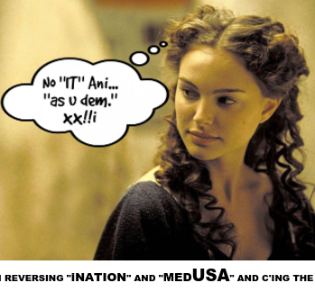

I am accepting charitable donations,.
layout: post title: da Mage of the head of Medusa appeared in the evil-averting device known as the Gorgoneian. date: '2017-09-14T07:37:00.001-07:00' author: Adam M. Dobrin tags: modified_time: '2017-09-16T15:08:24.475-07:00' thumbnail: https://1.bp.blogspot.com/-PhWBy0Lvc_4/WbqUL04JAVI/AAAAAAAAHCo/LaxAIv1yrrwpdDRFozNupN9brZNY3ErrACK4BGAYYCw/s72-c/image-754075.png blogger_id: tag:blogger.com,1999:blog-4677390916502096913.post-6319689343247270125 blogger_orig_url: ./2017/09/da-mage-of-head-of-medusa-appeared-in.html
Homer refers to the Gorgon on four occasions, each time alluding to the head alone, as if she had no body.[3] Jane Ellen Harrison notes that "Medusa is a head and nothing more... a mask with a body later appended".[2] Prior to the fifth century BC, she was depicted as particularly ugly, with a protruding tongue, boar tusks, puffy cheeks, her eyeballs staring fixedly on the viewer and the snakes twisting all around her. Merry September 14th, 2017.
 

While you may not realize it, I have spent a significant amount of time pointing out a large group of people complaining about "thought altering technology" and tried to make it very clear that this group of people are literally the Saints of the Tribulation and that they are a sort of "microcosm" of the crossing of the sea (in bittersweet symphony, "we're all crucified in the end") that links "walking on water" to Exodus; and I'm not exactly sure how that delivers freedom; if you refuse to acknowledge that these things are happening, investigate them in any meaningful way or discuss the fact that this is quite literally the manifestation of "demonic possession" described for ages in religion--and we now have both the neuroscientific and statistical tools to prove that they are indeed happening. We can also see "how" these things were created, in a story that "begins" (wake up) in Nazi Germany with a Paperclip and then moves to MK-ULTRA and the Soviet counterpart Psychotronics program ... in a sort of "look, you did it to yourselves" in a place where the damned truth is that you probably think you like it. I like being mind controlled too, it's fun.
Somehow "greying the line" between the words "demonic and divine" this secret possession ties not only to the mechanism by which "religion" has been delivered, the prophets, but also the mechanism by which it has been "believed" ... the stuff of "worship" being a very clear manifestation of this same control. Anyway, the "message" delivered in secret through our hands, the message speaking about delivering us from this exact slavery--this secret control--it does provide some "Holy Purpose," in a sort of snide way explaining that "had we known about the existence of this technology" rather than being victims of it, we'd probably have used it to implement Pre-Crime, to stop "bad things from happening" rather than ... well, in this place you probably don't see but there is a disgusting force actually making people do the wrong thing.

T H A T ' S G R E A T I T S T A R T S WI T H R.E.M.


3/11/11, 9/11/2001, 411: THE SONG IS ABOUT ENDING FORCE MAJEURE

NOV? DEV? UNV? CIK.
E M B E R
Have a look at School Shootings, and their statistically verifiable inhuman pattern of external control; and look--it's in the Holy Bible, you are looking at the Plague of Killing the Firstborn Children of Egypt. Further linking to both "Minority Report" and this message about revolutionizing our "ice" system, you can see this hidden language connecting to the word "POLICE" as Plague of Lice just like you can see it in Stephen King's Langolier as "Language of outliers." Verily, in truth, it's very clear these are not outliers, it is "verifiable" (to see, ver, if I able--to show you that it's also in Shakespeare's Schrew which you might also tie to rattling the Rod of Christ) and I am very able to show you I am El, for those of you that don't think it's important to read links about things you don't understand, that means "I am God."
This message continues to suggest that all of these things are proof that we are living in virtual reality; and that we should use that new "sight" to do other things that we all would have wanted to do "the whole time" had we known they were possible, like "turning stone to bread" and ending world hunger. It goes on to explain how this "radical change" in society has not only happened before, but that people "weren't so happy" with just bread, and we got "let them eat cake instead" from Mary; as an explanation as to why it is that we are thanking God for Guitar Man in the Ha-moat-see, and this pivotal and yet to be realized conversation about how we might use Gene Roddenberry's Replicators to make Adam's Den not so pissed off about Jesus's Rod.
Here's some "original research" on the subject of being tortured with mind control technology, something I have experienced--and without even knowing it a huge number of people around me seem to be experiencing... in silence... see it is also the cause of silence... and that ties to yet another Plague of Exodus, Hello darkness, my old friend. To see, it is the rising of the sun that ends these Plagues, and to read you are reading why and "are" the how.
- Letter from State-Targeted Individuals to President Trump (1/25/17)
- End Non consensual Human Experimentation/Electromagneti
- United States of Paranoia: They See Gangs of Stalkers
I do suggest the "government" do it's job and disclose the significant body of information they have regarding this event, and The Tribulation, confession... is the way to Absolution. You don't have to take my word for it, just believe yourselves when you see that "knowing is half the battle" turns into you are literally ending Hell by discussing and acting on the truth--and it's been designed just that perfectly. Either that, or you can continue to appear to be the whole problem.
To be honest with you, I, and these people, and probably you too don't need this evil averting device, or at least you don't think you do--because you are already experiencing it, in secret, without your knowledge or consent. At least, I am, so I'm telling you all about it--and how--used properly--it might be a great metaphor for a "mental fountain of youth" if there wasn't a "there will be no fountain of youth" mentality in the air. On a "higher level" we are reading a story that suggests this time line has happened "before" probably not just once, and hopefully not twenty-two times, but somewhere, somehow, your soul has got to see that you probably don't want to remember the exact same thing happening over and over; and I've suggested the idea of a mental "flash card" to not forget the past, which would probably bring us to yet another rewind... rather than remembering to win. You really might see, or understand, that after 10,000 years; something like this might be even more useful, and even more resembling of the "fountain of youth" that it is.
This whole spectacle, that connects "Riders on the Storm" to the Plague of Storms and the "western wind" that brought you here from the future (see the bit about "a house woven from branches" and see a wall, in the Gylfaginning) to keep you from doing anything you want to do; and you can probably see clearly how these things are all just Another Brick in the Wall of JerichoJust as a reminder that "SC" (in the word "scaffold" which I called the Neuralizer/Gorgonean for no reason at all) that ties to our map to Salvation in the States--it stands for "Sacred Consciousness" and the word "schizophrenia" and literally it is the first step to freedom. In yesterday's message I suggested two options for the "af" one of them is our colloquial "as fuck" and the other is the Angel of Anger, it really is one or the other. If you don't think having "self control" regarding retention of our memories, as well as the ability to "magically make PTSD and truama disappear" is ... "sacred consciousness as fuck" you are talking to the Angels of Anger and Wrath. If you agree with me, you are probably talking to Jebus, cond i to r i b us, creators.

To be honest with you, I, and these people, and probably you too don't need this evil averting device, or at least you don't think you do--because you are already experiencing it, in secret, without your knowledge or consent. At least, I am, so I'm telling you all about it--and how--used properly--it might be a great metaphor for a "mental fountain of youth" if there wasn't a "there will be no fountain of youth" mentality in the air. On a "higher level" we are reading a story that suggests this time line has happened "before" probably not just once, and hopefully not twenty-two times, but somewhere, somehow, your soul has got to see that you probably don't want to remember the exact same thing happening over and over; and I've suggested the idea of a mental "flash card" to not forget the past, which would probably bring us to yet another rewind... rather than remembering to win. You really might see, or understand, that after 10,000 years; something like this might be even more useful, and even more resembling of the "fountain of youth" that it is.
Just as a reminder that "SC" (in the word "scaffold" which I called the Neuralizer/Gorgonean for no reason at all) that ties to our map to Salvation in the States--it stands for "Sacred Consciousness" and the word "schizophrenia" and literally it is the first step to freedom. In yesterday's message I suggested two options for the "af" one of them is our colloquial "as fuck" and the other is the Angel of Anger, it really is one or the other. If you don't think having "self control" regarding retention of our memories, as well as the ability to "magically make PTSD and truama disappear" is ... "sacred consciousness as fuck" you are talking to the Angels of Anger and Wrath. If you agree with me, you are probably talking to Jebus, cond i to r i b us, creators.

In Ancient Greece, the Gorgoneion (Greek: Γοργόνειον) was a special apotropaic amulet show


A neuralyzer, sometimes spelled as neuralizer, is a device seen in the Men in Black franchise. It is one of the signature tools and considered standard issue employed by the Men in Black. It is a device about the size of an average cigar tube that gives a bright flash which erases the memories of the past hours, days, weeks, months or years, depending on the chosen settings. It first appeared in the first issue of the comic book series, and has appeared in all three films, as well as the animated TV series. It also has changed from red to blue.
Apotropaic magic (from Greek apotrepein "to ward off" from apo- "away" and trepein "to turn") is a type of magic intended to turn away harm or evil influences, as in deflecting misfortune or averting the evil eye. Apotropaic observances may also be practiced out of vague superstition or out of tradition, as in good luck charm (perhaps some token on a charm bracelet), amulets, or gestures such as crossed fingers or knocking on wood. The Greeks made offerings to the averting gods (Ἀποτρόπαιοι θεοί: Apotropaioi Theoi), chthonic deities and heroes who grant safety and deflect evil.[1]
Among the Ancient Greeks the most widely used image intended to avert evil was that of the Gorgon, the head of which now may be called the Gorgoneion, which features wild eyes, fangs, and protruding tongue. The full figure of the Gorgon holds the apex of the oldest remaining Greek temple where she is flanked by two lionesses. The Gorgon head was mounted on the aegis and shield of Athena.[5]
Eyes were often painted to ward off the evil eye. An exaggerated apotropaic eye or a pair of eyes were painted on Greek drinking vessels called kylikes (eye-cups) from the 6th century BC. The exaggerated eyes may have been intended to prevent evil spirits from entering the mouth while drinking.[6][7] Fishing boats in some parts of the Mediterranean region still have stylised eyes painted on the bows. A Turkish budget airline, Fly Havayolu Taşımacılık A.Ş., had adopted the symbol (known as Nazar boncuğu or Nazar bonjuk) as a motif for the vertical stabilizer of its aeroplanes. The Yiddish expression, Kain ein horeh (קיין עין הרע) is apotropaic in nature, and literally translates to "no evil eye", somewhat equivalent to the expression, "Knock on wood."
Changes to the neuralyzer have been featured in the films. In the first movie, the color of its eye was red. This was later changed to blue in the second film. It remains blue in the third film, although the shade is more of a turquoise rather than the previous film's aqua, and the design of the neuralyzer itself is considerably different compared to the previous films. In the first movie, Agent J calls the neuralyzer the "flashy thing" and dislikes the idea of using it and when he has to use it, believes that they should supply the victims with the best memories possible rather than Agent K's mundane and depressing memories. He used it at the end of the movie on K, wiping out 35 years of his service using the neuralyzer.
https://www.ncbi.nlm.nih.gov › NCBI › Literature › PubMed Central (PMC)
by JD Bremner - 2006 - Cited by 218 - Related articles
Brain areas implicated in the stress response include the amygdala, hippocampus, and prefrontal cortex. ... They also play a critical role in memory, highlighting the important interplay between memory and thetraumatic stress response. Preclinical studies show that stress affects these brain areas.THE HOLY GRAiL
THESE ARE THE DROIDS YOU ARE LOOKING FOR


THESE ARE PEOPLE


PERSON v. PHONE


blessing in disguise (plural b
- (idiomatic) A seeming misfortune that turns out to be for the best.
In modern society, the proverb "blood is thicker than water" is used to imply that family relationships are always more important than friends.
This place appears to be filled with an externally caused irrational desire not to be free; and that is directly connected to your irrational desire not to publicly speak about the Second Coming, or the truth (and freedom talking about that truth) delivers to the world. I'm fixing that for you.
BLOOD IS THICKER THAN WATER
1. Water into blood (דָם): Ex. 7:14–24[edit]
This is what the LORD says: By this you will know that I am the LORD: With the staff that is in my hands I will strike the water of the Nile, and it will be changed into blood. The fish in the Nile will die, and the river will stink and the Egyptians will not be able to drink its water.— Exodus 7:17–18
Nu (also Nenu, Nunu, Nun), feminine Naunet (also Nunut, Nuit, Nent, Nunet), is the deification of the primordial wateryabyss in the Hermopolitan Ogdoad cosmogony of ancient Egyptian religion. The name is paralleled with nen "inactivity" in a play of words in, "I raised them up from out of the watery mass [nu], out of inactivity [nen]".
Joshua /ˈdʒɒʃuə/ or Jehoshua (
Mary is a feminine given name, the English form of the name Maria, which was in turn a Latin form of the Greek names Μαριάμ (Mariam) and Μαρία (Maria), found in the New Testament. Both variants reflect Syro-Aramaic Maryam, itself a variant of the Hebrew name מִרְיָם or Miryam.[1]
mar m, f (plural mares)
Hey Zeus! (stylized as hey Zeus!) is the seventh and last studio album by X. Its tracks "Country at War" and "New Life" peaked at numbers 15 and 26 on the Billboard Modern Rock charts, respectively.
Elyon (Biblical Hebrew עליון; Masoretic ʿElyōn

- sea (body of water)
The men or ah (/məˈnɔːrə/; Hebrew: מְנוֹרָ
Allah (/ˈælə, ˈɑːlə, əlˈlɑː/;[ listen)) is the Arabic word for God in Abrahamic religions. In the English language, the word generally refers to God in Islam.[3][4][5] The word is thought to be derived by contraction from al-ilāh, which means "the god", and is related to El and Elohim, the Hebrew words for God.[6][7]
listen)) is the Arabic word for God in Abrahamic religions. In the English language, the word generally refers to God in Islam.[3][4][5] The word is thought to be derived by contraction from al-ilāh, which means "the god", and is related to El and Elohim, the Hebrew words for God.[6][7]
Rebekah) (Hebrew: רִבְקָה, Modern Rivká
The Shekhina(h) (also spelled Shekina(h), Schechina(
This term does not occur in the Bible, and is from rabbinic literature.[2]:148[3][4]
Shekhinah is derived from the Hebrew verb שכן. The Semitic root means "to settle, inhabit, or dwell". This abstract noun is not present in the Bible, and is first encountered in rabbinic literature.[2]:148–149, [3] Th
Eve (/ˈiːv/; Hebrew: חַוָּה,
According to the second chapter of Genesis, Eve was created by God (Yahweh) by taking her from the rib[2] of Adam, to be Adam's companion. She succumbs to the serpent's temptation to eat the forbidden fruit from the tree of the knowledge of good and evil. She shares the fruit with Adam, and as a result the first humans are expelled from the Garden of Eden. Christian churches differ on how they view both Adam and Eve's disobedience to God (often called the fall of man), and to the consequences that those actions had on the rest of humanity. Christian and Jewish teachings sometimes hold Adam (the first man) and Eve to a different level of responsibility for the fall, although Islamic teaching holds both equally responsible.
Although Eve is not a saint's name, the traditional name day of Adam and Eve has been celebrated on December 24
From Middle English aren, from Old English earun, earon ("are"), reinforced by Old Norse plural forms in er- (displacing alternative Old English sind and bēoþ), from Proto-Germanic {{ "{{" }}m|gem-pr
This term does not occur in the Bible, and is from rabbinic literature.[2]:148[3][4]
Shekhinah is derived from the Hebrew verb שכן. The Semitic root means "to settle, inhabit, or dwell". This abstract noun is not present in the Bible, and is first encountered in rabbinic literature.[2]:148–149, [3] Th
Eve (/ˈiːv/; Hebrew: חַוָּה,
According to the second chapter of Genesis, Eve was created by God (Yahweh) by taking her from the rib[2] of Adam, to be Adam's companion. She succumbs to the serpent's temptation to eat the forbidden fruit from the tree of the knowledge of good and evil. She shares the fruit with Adam, and as a result the first humans are expelled from the Garden of Eden. Christian churches differ on how they view both Adam and Eve's disobedience to God (often called the fall of man), and to the consequences that those actions had on the rest of humanity. Christian and Jewish teachings sometimes hold Adam (the first man) and Eve to a different level of responsibility for the fall, although Islamic teaching holds both equally responsible.
Although Eve is not a saint's name, the traditional name day of Adam and Eve has been celebrated on December 24
From Middle English aren, from Old English earun, earon ("are"), reinforced by Old Norse plural forms in er- (displacing alternative Old English sind and bēoþ), from Proto-Germanic {{ "{{" }}m|gem-pr


Hey Zeus! (stylized as hey Zeus!) is the seventh and last studio album by X. Its tracks "Country at War" and "New Life" peaked at numbers 15 and 26 on the Billboard Modern Rock charts, respectively.
Elyon (Biblical Hebrew עליון; Masoretic ʿElyōn

Revelation 7 is the seventh chapter of the Book of Revelation or the Apocalypse of John in the New Testament of the ChristianBible.[1][2] The book is traditionally attributed to John the Apostle.[3][4]
great multitude stand before the Throne of God, who come out of the Great Tribulation, clothed with robes made "white in the blood of the Lamb" and having palm branches in their hands. (7:9–17)
The Marriage Supper of the Lamb
The Roman Catholic Church, Eastern Orthodox churches, the Oriental Orthodox churches, the Assyrian Church of the East, and Lutherans, together with some Anglicans, believe in the Real Presence of Christ in the Eucharist. The Roman Catholic Church uses the term "Transubstantiation" to describe the change of the bread and wine into the body and blood of Christ. Eastern Orthodox too have authoritatively used the same term to describe the change, as in The Longer Catechism of The Orthodox, Catholic, Eastern Church[1] and in the decrees of the 1672 Synod of Jerusalem.[2
The New Heaven and Earth, and New Jerusalem
great multitude stand before the Throne of God, who come out of the Great Tribulation, clothed with robes made "white in the blood of the Lamb" and having palm branches in their hands. (7:9–17)
The Marriage Supper of the Lamb
- A great multitude praises God. (19:1–6)
- The marriage Supper of the Lamb. (19:7–10)
The Roman Catholic Church, Eastern Orthodox churches, the Oriental Orthodox churches, the Assyrian Church of the East, and Lutherans, together with some Anglicans, believe in the Real Presence of Christ in the Eucharist. The Roman Catholic Church uses the term "Transubstantiation" to describe the change of the bread and wine into the body and blood of Christ. Eastern Orthodox too have authoritatively used the same term to describe the change, as in The Longer Catechism of The Orthodox, Catholic, Eastern Church[1] and in the decrees of the 1672 Synod of Jerusalem.[2
The New Heaven and Earth, and New Jerusalem
- A new, glorious Heaven replaces the old Earth. There is no more suffering or death. (21:1–8)
- God comes to dwell with humanity in the New Jerusalem. (21:2–8)
- Description of the New Jerusalem. (21:9–27)

{kind=link}
{kind=link}
{kind=link}
{kind=link}
{kind=link}
{kind=link}
Post-traumatic stress disorder and declarative memory functioning: a ...
by KW Samuelson - 2011 - Cited by 57 - Related articles
Declarative memory dysfunction is associated with post-traumatic stress disorder (PTSD). ... Brain regions implicated in declarative memory deficits include the hippocampus and prefrontal cortex, and imaging and biochemistry studies as they relate to memory dysfunction are described.How Traumatic Memories Hide In The Brain, And How To Retrieve ...
Aug 18, 2015 - In a new study with mice, Northwestern Medicine scientists have ... of consciousness as when the memory was encoded, the study showed.
Memory and trauma - Wikipedia
Memory is described by psychology as the ability of an organism to store, retain, and ... For example, the most studied individual in the history of brain research, HM, retained his previously stored long-termmemory as well as functional ...
Erasing traumatic memories | Harvard Gazette
Aug 27, 2014 - "In our study, we found that xenon gas has the capability of reducing ... were able to inhibit remembering of a traumatic memory with xenon is ...
Changing Memories to Treat PTSD - The Atlantic
Aug 27, 2014 - The paper reviews a growing body of scientific literature on memory .... by the trauma of their experiences—it's an issue that those who study ...
Erasing bad memories - American Psychological Association
www.apa.org › Monitor on Psychology › February 2015 Monitor on Psychology
Extinguishing the traumatic aspect of a memory involves creating new, safer ... Ramirez co-authored a 2014 study in which he and a team from RIKEN-MIT ...Questions and Answers about Memories of Childhood Abuse
www.apa.org › Psychology Topics › Trauma
Experts in the field of memory and trauma can provide some answers, but clearly more study and research are needed. What we do know is that both memory ...Deleting a traumatic memory may be possible: study | CTV News
Mar 7, 2017 - Imagine you could permanently erase a traumatic memory… Would you? While the idea might seem like it belongs to the realm of science ...
ᐧ
ᐧ
ᐧ
ᐧ